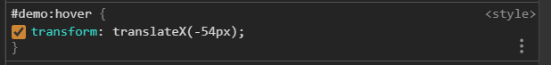
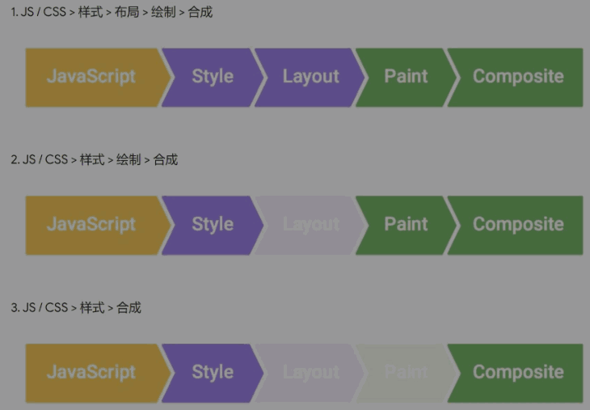

8-CSS动画
0. 其他#
-
ESC -> ...(竖) -> Rendering -> Paint flashing
绿色表示重新绘制 (repaint) 了
CSS 渲染过程依次包含布局、绘制、合成
其中布局和绘制有可能被省略
-
加样式不如加类，因为类里可以有很多样式
-
鼠标放到数字上，再按 Up/Dn 可以调大小
Shift + Up/Dn 每次变10像素

-
#demo .end
表示 demo 后代里的 .end
-
#demo.end
表示 demo 拥有 end 的时候
1. 目标#
- CSS 动画
2. 主体#
1) transform#
并没有 repaint (重新绘制)
比改 left 性能好
2) 浏览器渲染原理#
-
google团队的文章
- 渲染树构建、布局及绘制
- 渲染性能
-
CSS 动画优化
-
JS 优化: 使用 requestAnimationFrame 代替 setTimeout 或 setInterval
-
CSS 优化: 使用 will-change 或 translate
-
-
查看 CSS 各属性触发什么
-
浏览器渲染过程
- 根据 HTML 构建 HTML 树 (DOM)
- 根据 CSS 构建 CSS 树 (CSSOM)
- 将两棵树合并成一棵渲染树 (render tree)
- Layout 布局 (文档流、盒模型、计算大小和位置)
- Paint 绘制 (把边框颜色、文字颜色、阴影等画出来)
- Composite 合成 (根据层叠关系展示画面)
-
如何更新样式
-
一般我们用 JS 来更新样式
- 比如 div.style.background = 'red'
- 比如 div.style.display = 'none'
- 比如 div.classList.add('red')
- 比如 div.remove() 直接删掉节点
-
这些方法有什么不同吗
-
有三种不同的渲染方式

-
第一种，如 div.remove()
-
第二种，如 div.style.background = 'red'
-
第三种，如 div.style.transform = 'translateX(100px)'
-
-
-
3) 其他属性 (property)#
-
perspective
determines the distance between the z=0 plane and the user
-
transition
-
并不是所有属性都能过渡
display: none -> block 没法过渡
一般改成 visibility: hidden -> visible
-
display 和 visibility 的区别自己搜一下
- background 和 opacity 可以过渡
-
-
有中间点
两种方法：
-
使用两次 transform
如何知道到了中间点？
用 setTimeout 或者监听 transitionend 事件
-
使用 animation
animation, @keyframes
-